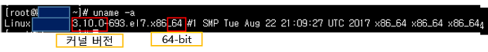

<!DOCTYPE html>
<html>
<head><meta name="generator" content="Hexo 3.8.0">
    <meta charset="utf-8">
    
    <title>Docker의 설치 방법 (Linux) | J Dev</title>
    <meta name="viewport" content="width=device-width, initial-scale=1, maximum-scale=1">
    
        <meta name="keywords" content="docker">
    
    <meta name="description" content="1. Docker를 사용 환경 (CentOS 7 환경)(1) Linux 커널 버전 3.10 이상 및 64 bit에서 최정화 및 구동이 됩니다.  확인 방법1$ #uname -a   (2) 설치 및 실행을 위해서는 root로 작업을 해야 합니다. 2. Docker에도 제품 군이 존재한다?1) Docker-CE(Community Edition) - (무료)">
<meta name="keywords" content="docker">
<meta property="og:type" content="article">
<meta property="og:title" content="Docker의 설치 방법 (Linux)">
<meta property="og:url" content="http://woonyzzang.github.com/2019/08/09/docker-install/index.html">
<meta property="og:site_name" content="J Dev">
<meta property="og:description" content="1. Docker를 사용 환경 (CentOS 7 환경)(1) Linux 커널 버전 3.10 이상 및 64 bit에서 최정화 및 구동이 됩니다.  확인 방법1$ #uname -a   (2) 설치 및 실행을 위해서는 root로 작업을 해야 합니다. 2. Docker에도 제품 군이 존재한다?1) Docker-CE(Community Edition) - (무료)">
<meta property="og:locale" content="en">
<meta property="og:image" content="http://woonyzzang.github.com/2019/08/09/docker-install/docker-install_1.png">
<meta property="og:updated_time" content="2019-08-09T04:31:42.280Z">
<meta name="twitter:card" content="summary">
<meta name="twitter:title" content="Docker의 설치 방법 (Linux)">
<meta name="twitter:description" content="1. Docker를 사용 환경 (CentOS 7 환경)(1) Linux 커널 버전 3.10 이상 및 64 bit에서 최정화 및 구동이 됩니다.  확인 방법1$ #uname -a   (2) 설치 및 실행을 위해서는 root로 작업을 해야 합니다. 2. Docker에도 제품 군이 존재한다?1) Docker-CE(Community Edition) - (무료)">
<meta name="twitter:image" content="http://woonyzzang.github.com/2019/08/09/docker-install/docker-install_1.png">
    
    <link rel="canonical" href="http://woonyzzang.github.com/2019/08/09/docker-install/">

    

    
        <link rel="icon" href="/images/favicon.png">
    

    <link rel="stylesheet" href="/libs/font-awesome/css/font-awesome.min.css">
    <link rel="stylesheet" href="/libs/titillium-web/styles.css">
    <link rel="stylesheet" href="/libs/source-code-pro/styles.css">

    <link rel="stylesheet" href="/css/style.css">

    <script src="/libs/jquery/2.0.3/jquery.min.js"></script>
    
    
        <link rel="stylesheet" href="/libs/lightgallery/css/lightgallery.min.css">
    
    
    

</head>
</html>
<body>
    <div id="wrap">
        <header id="header">
    <div id="header-outer" class="outer">
        <div class="container">
            <div class="container-inner">
                <div id="header-title">
                    <h1 class="logo-wrap">
                        <a href="/" class="logo"></a>
                    </h1>
                    
                        <h2 class="subtitle-wrap">
                            <p class="subtitle">Web Development Story Blog</p>
                        </h2>
                    
                </div>
                <div id="header-inner" class="nav-container">
                    <a id="main-nav-toggle" class="nav-icon fa fa-bars"></a>
                    <div class="nav-container-inner">
                        <ul id="main-nav">
                            
                                <li class="main-nav-list-item">
                                    <a class="main-nav-list-link" href="/">Home</a>
                                </li>
                            
                                        <ul class="main-nav-list"><li class="main-nav-list-item"><a class="main-nav-list-link" href="/categories/App/">App</a><ul class="main-nav-list-child"><li class="main-nav-list-item"><a class="main-nav-list-link" href="/categories/App/Ionic/">Ionic</a></li></ul></li><li class="main-nav-list-item"><a class="main-nav-list-link" href="/categories/Editor/">Editor</a><ul class="main-nav-list-child"><li class="main-nav-list-item"><a class="main-nav-list-link" href="/categories/Editor/SublimeText/">SublimeText</a></li><li class="main-nav-list-item"><a class="main-nav-list-link" href="/categories/Editor/Visualstudio/">Visualstudio</a></li><li class="main-nav-list-item"><a class="main-nav-list-link" href="/categories/Editor/Webstorm/">Webstorm</a></li></ul></li><li class="main-nav-list-item"><a class="main-nav-list-link" href="/categories/Etc/">Etc</a><ul class="main-nav-list-child"><li class="main-nav-list-item"><a class="main-nav-list-link" href="/categories/Etc/Log/">Log</a></li></ul></li><li class="main-nav-list-item"><a class="main-nav-list-link" href="/categories/FrontEnd/">FrontEnd</a><ul class="main-nav-list-child"><li class="main-nav-list-item"><a class="main-nav-list-link" href="/categories/FrontEnd/Angular-js/">Angular.js</a></li><li class="main-nav-list-item"><a class="main-nav-list-link" href="/categories/FrontEnd/Backbone-js/">Backbone.js</a></li><li class="main-nav-list-item"><a class="main-nav-list-link" href="/categories/FrontEnd/D3-js/">D3.js</a></li><li class="main-nav-list-item"><a class="main-nav-list-link" href="/categories/FrontEnd/Javascript-js/">Javascript.js</a></li><li class="main-nav-list-item"><a class="main-nav-list-link" href="/categories/FrontEnd/Node-js/">Node.js</a></li><li class="main-nav-list-item"><a class="main-nav-list-link" href="/categories/FrontEnd/React-js/">React.js</a></li><li class="main-nav-list-item"><a class="main-nav-list-link" href="/categories/FrontEnd/Require-js/">Require.js</a></li><li class="main-nav-list-item"><a class="main-nav-list-link" href="/categories/FrontEnd/Webpack/">Webpack</a></li><li class="main-nav-list-item"><a class="main-nav-list-link" href="/categories/FrontEnd/jQuery/">jQuery</a></li></ul></li><li class="main-nav-list-item"><a class="main-nav-list-link" href="/categories/OS/">OS</a><ul class="main-nav-list-child"><li class="main-nav-list-item"><a class="main-nav-list-link" href="/categories/OS/Mac/">Mac</a></li><li class="main-nav-list-item"><a class="main-nav-list-link" href="/categories/OS/Ubuntu/">Ubuntu</a></li><li class="main-nav-list-item"><a class="main-nav-list-link" href="/categories/OS/Windows/">Windows</a></li></ul></li><li class="main-nav-list-item"><a class="main-nav-list-link" href="/categories/Server/">Server</a><ul class="main-nav-list-child"><li class="main-nav-list-item"><a class="main-nav-list-link" href="/categories/Server/ASP/">ASP</a></li><li class="main-nav-list-item"><a class="main-nav-list-link" href="/categories/Server/AWS/">AWS</a></li><li class="main-nav-list-item"><a class="main-nav-list-link" href="/categories/Server/Docker/">Docker</a></li></ul></li><li class="main-nav-list-item"><a class="main-nav-list-link" href="/categories/Tools/">Tools</a><ul class="main-nav-list-child"><li class="main-nav-list-item"><a class="main-nav-list-link" href="/categories/Tools/APMSETUP/">APMSETUP</a></li><li class="main-nav-list-item"><a class="main-nav-list-link" href="/categories/Tools/Fiddler/">Fiddler</a></li><li class="main-nav-list-item"><a class="main-nav-list-link" href="/categories/Tools/OpenSSl/">OpenSSl</a></li></ul></li><li class="main-nav-list-item"><a class="main-nav-list-link" href="/categories/Web/">Web</a><ul class="main-nav-list-child"><li class="main-nav-list-item"><a class="main-nav-list-link" href="/categories/Web/CSS/">CSS</a></li><li class="main-nav-list-item"><a class="main-nav-list-link" href="/categories/Web/Descktop/">Descktop</a></li><li class="main-nav-list-item"><a class="main-nav-list-link" href="/categories/Web/Markdown/">Markdown</a></li><li class="main-nav-list-item"><a class="main-nav-list-link" href="/categories/Web/Mobile/">Mobile</a></li><li class="main-nav-list-item"><a class="main-nav-list-link" href="/categories/Web/Others/">Others</a></li></ul></li></ul>
                                    
                        </ul>
                        <nav id="sub-nav">
                            <div id="search-form-wrap">

    <form class="search-form">
        <input type="text" class="ins-search-input search-form-input" placeholder="Search">
        <button type="submit" class="search-form-submit"></button>
    </form>
    <div class="ins-search">
    <div class="ins-search-mask"></div>
    <div class="ins-search-container">
        <div class="ins-input-wrapper">
            <input type="text" class="ins-search-input" placeholder="Type something...">
            <span class="ins-close ins-selectable"><i class="fa fa-times-circle"></i></span>
        </div>
        <div class="ins-section-wrapper">
            <div class="ins-section-container"></div>
        </div>
    </div>
</div>
<script>
(function (window) {
    var INSIGHT_CONFIG = {
        TRANSLATION: {
            POSTS: 'Posts',
            PAGES: 'Pages',
            CATEGORIES: 'Categories',
            TAGS: 'Tags',
            UNTITLED: '(Untitled)',
        },
        ROOT_URL: '/',
        CONTENT_URL: '/content.json',
    };
    window.INSIGHT_CONFIG = INSIGHT_CONFIG;
})(window);
</script>
<script src="/js/insight.js"></script>

</div>
                        </nav>
                    </div>
                </div>
            </div>
        </div>
    </div>
</header>
        <div class="container">
            <div class="main-body container-inner">
                <div class="main-body-inner">
                    <section id="main">
                        <div class="main-body-header">
    <h1 class="header">
    
    <a class="page-title-link" href="/categories/Server/">Server</a><i class="icon fa fa-angle-right"></i><a class="page-title-link" href="/categories/Server/Docker/">Docker</a>
    </h1>
</div>
                        <div class="main-body-content">
                            <article id="post-docker-install" class="article article-single article-type-post" itemscope="" itemprop="blogPost">
    <div class="article-inner">
        
            <header class="article-header">
                
    
        <h1 class="article-title" itemprop="name">
        Docker의 설치 방법 (Linux)
        </h1>
    

            </header>
        
        
            <div class="article-subtitle">
                <a href="/2019/08/09/docker-install/" class="article-date">
    <time datetime="2019-08-09T04:10:33.000Z" itemprop="datePublished">2019-08-09</time>
</a>
                
    <ul class="article-tag-list"><li class="article-tag-list-item"><a class="article-tag-list-link" href="/tags/docker/">docker</a></li></ul>

            </div>
        
        
        <div class="article-entry" itemprop="articleBody">
            <h3 id="1-Docker를-사용-환경-CentOS-7-환경"><a href="#1-Docker를-사용-환경-CentOS-7-환경" class="headerlink" title="1. Docker를 사용 환경 (CentOS 7 환경)"></a>1. Docker를 사용 환경 (CentOS 7 환경)</h3><p>(1) Linux 커널 버전 3.10 이상 및 64 bit에서 최정화 및 구동이 됩니다.</p>
<ul>
<li>확인 방법<figure class="highlight bash"><table><tr><td class="gutter"><pre><span class="line">1</span><br></pre></td><td class="code"><pre><span class="line">$ <span class="comment">#uname -a</span></span><br></pre></td></tr></table></figure>
</li>
</ul>
<p><br>(2) 설치 및 실행을 위해서는 root로 작업을 해야 합니다.</p>
<h3 id="2-Docker에도-제품-군이-존재한다"><a href="#2-Docker에도-제품-군이-존재한다" class="headerlink" title="2. Docker에도 제품 군이 존재한다?"></a>2. Docker에도 제품 군이 존재한다?</h3><p>1) Docker-CE(Community Edition) - (무료)</p>
<ul>
<li>Docker를 시작하고 컨테이너 기반 앱을 실험하려는 개발자 및 소규모 팀에 이상적 (무료)</li>
<li>두 가지 업데이트 채널<ul>
<li>Stable : 분기마다 안정적인 업데이트 버전</li>
<li>Edge : 매월 새 기능 제공, 테스트가 아직 부족한 버전</li>
</ul>
</li>
</ul>
<p>2) Docker-EE(Enterprise Edition) (유료)</p>
<ul>
<li>업무용 응용 프로그램 제작, 배송 및 실행하는 엔터프라이즈 개발 및 IT팀을 위한 설계 (유료)</li>
</ul>
<ul>
<li><a href="https://docs.docker.com/install/overview/" target="_blank" rel="noopener">https://docs.docker.com/install/overview/</a></li>
<li><a href="https://docs.docker.com/docker-for-mac/faqs/" target="_blank" rel="noopener">https://docs.docker.com/docker-for-mac/faqs/</a></li>
</ul>
<h3 id="3-yum을-이용한-설치"><a href="#3-yum을-이용한-설치" class="headerlink" title="3. yum을 이용한 설치"></a>3. yum을 이용한 설치</h3><p><strong>사전 확인 작업</strong></p>
<ul>
<li>docker가 설치된 host에 ipv4 forwarding기능이 설정되어야 합니다. </li>
<li><p>확인 방법</p>
<figure class="highlight bash"><table><tr><td class="gutter"><pre><span class="line">1</span><br></pre></td><td class="code"><pre><span class="line">$ /sbin/sysctl net.ipv4.conf.all.forwarding</span><br></pre></td></tr></table></figure>
</li>
<li><p>설정 방법</p>
<figure class="highlight bash"><table><tr><td class="gutter"><pre><span class="line">1</span><br></pre></td><td class="code"><pre><span class="line">$ /sbin/sysctl -w net.ipv4.conf.all.forwarding=1</span><br></pre></td></tr></table></figure>
</li>
</ul>
<ul>
<li>이렇게 했는데도 안되면 docker 데몬을 재시작 합니다. <figure class="highlight bash"><table><tr><td class="gutter"><pre><span class="line">1</span><br></pre></td><td class="code"><pre><span class="line">$ systemctl restart docker</span><br></pre></td></tr></table></figure>
</li>
</ul>
<p><strong>Docker 설치</strong><br><figure class="highlight bash"><table><tr><td class="gutter"><pre><span class="line">1</span><br><span class="line">2</span><br><span class="line">3</span><br><span class="line">4</span><br><span class="line">5</span><br><span class="line">6</span><br><span class="line">7</span><br><span class="line">8</span><br><span class="line">9</span><br><span class="line">10</span><br><span class="line">11</span><br></pre></td><td class="code"><pre><span class="line">$ yum install -y yum-utils // yum 패키지매니저 관련 유틸리티 모음 설치</span><br><span class="line"></span><br><span class="line">$ yum-config-manager --add-repo https://download.docker.com/linux/centos/docker-ce.repo // yum 저장소 리스트에 docker 저장소 추가</span><br><span class="line"></span><br><span class="line">$ yum install -y docker-ce // 무료버전 docker 설치</span><br><span class="line"></span><br><span class="line">$ systemctl start docker // docker 시작</span><br><span class="line"></span><br><span class="line">$ systemctl <span class="built_in">enable</span> docker.service // 부팅(Boot) 시에 실행 하도록 (systemctl)에 등록</span><br><span class="line">$ systemctl start docker.service // Docker 실행</span><br><span class="line">$ systemctl status docker.service // systemctl 사용 Docker 스테이터스 확인</span><br></pre></td></tr></table></figure></p>
<h2 id="Docker-image-구하기-리눅스-CentOS-7"><a href="#Docker-image-구하기-리눅스-CentOS-7" class="headerlink" title="Docker image 구하기 - 리눅스(CentOS 7)"></a>Docker image 구하기 - 리눅스(CentOS 7)</h2><h3 id="1-Docker-image-검색하기"><a href="#1-Docker-image-검색하기" class="headerlink" title="1. Docker image 검색하기"></a>1. Docker image 검색하기</h3><ul>
<li>다음 2가지 방법으로 구할 수 있습니다.</li>
</ul>
<p><strong>웹에서 이미지 찾기</strong></p>
<ul>
<li><a href="https://hub.docker.com/" target="_blank" rel="noopener">https://hub.docker.com/</a> 여기서 다운로할 image를 확인한다.</li>
</ul>
<p><strong>docker search 커맨드 명령어로 이미지 찾기</strong><br><figure class="highlight bash"><table><tr><td class="gutter"><pre><span class="line">1</span><br></pre></td><td class="code"><pre><span class="line">docker search &#123;이미지&#125;</span><br></pre></td></tr></table></figure></p>
<h3 id="2-Docker-image-다운받기"><a href="#2-Docker-image-다운받기" class="headerlink" title="2. Docker image 다운받기"></a>2. Docker image 다운받기</h3><figure class="highlight bash"><table><tr><td class="gutter"><pre><span class="line">1</span><br></pre></td><td class="code"><pre><span class="line">docker pull &#123;이미지&#125;</span><br></pre></td></tr></table></figure>
<h3 id="3-Docker-image-목록확인"><a href="#3-Docker-image-목록확인" class="headerlink" title="3. Docker image 목록확인"></a>3. Docker image 목록확인</h3><figure class="highlight bash"><table><tr><td class="gutter"><pre><span class="line">1</span><br></pre></td><td class="code"><pre><span class="line">docker images</span><br></pre></td></tr></table></figure>
<h3 id="4-Docker-image-삭제"><a href="#4-Docker-image-삭제" class="headerlink" title="4. Docker image 삭제"></a>4. Docker image 삭제</h3><figure class="highlight bash"><table><tr><td class="gutter"><pre><span class="line">1</span><br></pre></td><td class="code"><pre><span class="line">docker rmi &#123;id&#125;</span><br></pre></td></tr></table></figure>
<h3 id="5-Docker-컨테이너-생성-및-실행"><a href="#5-Docker-컨테이너-생성-및-실행" class="headerlink" title="5. Docker 컨테이너 생성 및 실행"></a>5. Docker 컨테이너 생성 및 실행</h3><figure class="highlight bash"><table><tr><td class="gutter"><pre><span class="line">1</span><br></pre></td><td class="code"><pre><span class="line">$ docker run -dit --name &#123;name&#125; -p 80:80 &#123;image or id&#125; -v /sys/fs/cgroup:/sys/fs/cgroup:ro</span><br></pre></td></tr></table></figure>
<h3 id="6-Docker-컨테이너-접근"><a href="#6-Docker-컨테이너-접근" class="headerlink" title="6. Docker 컨테이너 접근"></a>6. Docker 컨테이너 접근</h3><figure class="highlight bash"><table><tr><td class="gutter"><pre><span class="line">1</span><br><span class="line">2</span><br><span class="line">3</span><br></pre></td><td class="code"><pre><span class="line">$ docker <span class="built_in">exec</span> -it &#123;name or id&#125; bash // 컨테이너 내부 접속</span><br><span class="line"></span><br><span class="line">$ <span class="built_in">exit</span> // 컨테이너 나오기</span><br></pre></td></tr></table></figure>
<h3 id="7-Docker-컨테이너-삭제"><a href="#7-Docker-컨테이너-삭제" class="headerlink" title="7. Docker 컨테이너 삭제"></a>7. Docker 컨테이너 삭제</h3><figure class="highlight bash"><table><tr><td class="gutter"><pre><span class="line">1</span><br></pre></td><td class="code"><pre><span class="line">$ docker rm &#123;name&#125;</span><br></pre></td></tr></table></figure>
<h3 id="8-구동중인-리스트-확인"><a href="#8-구동중인-리스트-확인" class="headerlink" title="8. 구동중인 리스트 확인"></a>8. 구동중인 리스트 확인</h3><figure class="highlight bash"><table><tr><td class="gutter"><pre><span class="line">1</span><br><span class="line">2</span><br><span class="line">3</span><br></pre></td><td class="code"><pre><span class="line">$ docker ps</span><br><span class="line"></span><br><span class="line">$ docker ps <span class="_">-a</span></span><br></pre></td></tr></table></figure>
<h3 id="9-Docker-컨테이너-시작-및-중지"><a href="#9-Docker-컨테이너-시작-및-중지" class="headerlink" title="9. Docker 컨테이너 시작 및 중지"></a>9. Docker 컨테이너 시작 및 중지</h3><figure class="highlight bash"><table><tr><td class="gutter"><pre><span class="line">1</span><br><span class="line">2</span><br><span class="line">3</span><br><span class="line">4</span><br><span class="line">5</span><br></pre></td><td class="code"><pre><span class="line">$ docker start &#123;name&#125; // 시작 </span><br><span class="line"></span><br><span class="line">$ docker stop &#123;name&#125; // 중지</span><br><span class="line"></span><br><span class="line">$ docker restart &#123;name&#125; // 재시작</span><br></pre></td></tr></table></figure>
<h3 id="참조"><a href="#참조" class="headerlink" title="참조"></a>참조</h3><ul>
<li><a href="https://docs.docker.com/install/linux/docker-ce/centos/" target="_blank" rel="noopener">https://docs.docker.com/install/linux/docker-ce/centos/</a></li>
<li><a href="https://doitnow-man.tistory.com/181" target="_blank" rel="noopener">https://doitnow-man.tistory.com/181</a></li>
</ul>

        </div>
        <footer class="article-footer">
            


    <a data-url="http://woonyzzang.github.com/2019/08/09/docker-install/" data-id="cjz3le7mu00ntlaf9p1b5oqnz" class="article-share-link"><i class="fa fa-share"></i>Share</a>
<script>
    (function ($) {
        $('body').on('click', function() {
            $('.article-share-box.on').removeClass('on');
        }).on('click', '.article-share-link', function(e) {
            e.stopPropagation();

            var $this = $(this),
                url = $this.attr('data-url'),
                encodedUrl = encodeURIComponent(url),
                id = 'article-share-box-' + $this.attr('data-id'),
                offset = $this.offset(),
                box;

            if ($('#' + id).length) {
                box = $('#' + id);

                if (box.hasClass('on')){
                    box.removeClass('on');
                    return;
                }
            } else {
                var html = [
                    '<div id="' + id + '" class="article-share-box">',
                        '<input class="article-share-input" value="' + url + '">',
                        '<div class="article-share-links">',
                            '<a href="https://twitter.com/intent/tweet?url=' + encodedUrl + '" class="article-share-twitter" target="_blank" title="Twitter"></a>',
                            '<a href="https://www.facebook.com/sharer.php?u=' + encodedUrl + '" class="article-share-facebook" target="_blank" title="Facebook"></a>',
                            '<a href="http://pinterest.com/pin/create/button/?url=' + encodedUrl + '" class="article-share-pinterest" target="_blank" title="Pinterest"></a>',
                            '<a href="https://plus.google.com/share?url=' + encodedUrl + '" class="article-share-google" target="_blank" title="Google+"></a>',
                        '</div>',
                    '</div>'
                ].join('');

              box = $(html);

              $('body').append(box);
            }

            $('.article-share-box.on').hide();

            box.css({
                top: offset.top + 25,
                left: offset.left
            }).addClass('on');

        }).on('click', '.article-share-box', function (e) {
            e.stopPropagation();
        }).on('click', '.article-share-box-input', function () {
            $(this).select();
        }).on('click', '.article-share-box-link', function (e) {
            e.preventDefault();
            e.stopPropagation();

            window.open(this.href, 'article-share-box-window-' + Date.now(), 'width=500,height=450');
        });
    })(jQuery);
</script>

        </footer>
    </div>
</article>

    <section id="comments">
    
        
    <div id="disqus_thread">
        <noscript>Please enable JavaScript to view the <a href="//disqus.com/?ref_noscript">comments powered by Disqus.</a></noscript>
    </div>

    
    </section>


                        </div>
                    </section>
                    <aside id="sidebar">
    <a class="sidebar-toggle" title="Expand Sidebar"><i class="toggle icon"></i></a>
    <div class="sidebar-top">
        <p>follow:</p>
        <ul class="social-links">
            
                
                <li>
                    <a class="social-tooltip" title="github" href="https://github.com/woonyzzang/" target="_blank">
                        <i class="icon fa fa-github"></i>
                    </a>
                </li>
                
            
                
                <li>
                    <a class="social-tooltip" title="cloud" href="http://j-portfolio.herokuapp.com/" target="_blank">
                        <i class="icon fa fa-cloud"></i>
                    </a>
                </li>
                
            
                
                <li>
                    <a class="social-tooltip" title="jsfiddle" href="https://jsfiddle.net/user/woonyzzang/fiddles/" target="_blank">
                        <i class="icon fa fa-jsfiddle"></i>
                    </a>
                </li>
                
            
        </ul>
    </div>
    <!-- github card -->
    
    <div class="github-card" data-github="woonyzzang" data-width="100%" data-height="150" data-theme="default"></div>
    
    <script src="/libs/github-cards/widget.min.js"></script>
    <!-- //github card -->
    
        
<nav id="article-nav">
    
        <a href="/2019/08/09/docker-image/" id="article-nav-newer" class="article-nav-link-wrap">
        <strong class="article-nav-caption">newer</strong>
        <p class="article-nav-title">
        
            Docker Image 만들기 / 삭제 (Linux)
        
        </p>
        <i class="icon fa fa-chevron-right" id="icon-chevron-right"></i>
    </a>
    
    
        <a href="/2019/08/09/docker/" id="article-nav-older" class="article-nav-link-wrap">
        <strong class="article-nav-caption">older</strong>
        <p class="article-nav-title">Docker 가상화 서버 개념</p>
        <i class="icon fa fa-chevron-left" id="icon-chevron-left"></i>
        </a>
    
</nav>

    
    <div class="widgets-container">
        
            
                
    <div class="widget-wrap widget-list">
        <h3 class="widget-title">categories</h3>
        <div class="widget">
            <ul class="category-list"><li class="category-list-item"><a class="category-list-link" href="/categories/App/">App</a><span class="category-list-count">6</span><ul class="category-list-child"><li class="category-list-item"><a class="category-list-link" href="/categories/App/Ionic/">Ionic</a><span class="category-list-count">6</span></li></ul></li><li class="category-list-item"><a class="category-list-link" href="/categories/Editor/">Editor</a><span class="category-list-count">10</span><ul class="category-list-child"><li class="category-list-item"><a class="category-list-link" href="/categories/Editor/SublimeText/">SublimeText</a><span class="category-list-count">3</span></li><li class="category-list-item"><a class="category-list-link" href="/categories/Editor/Visualstudio/">Visualstudio</a><span class="category-list-count">1</span></li><li class="category-list-item"><a class="category-list-link" href="/categories/Editor/Webstorm/">Webstorm</a><span class="category-list-count">6</span></li></ul></li><li class="category-list-item"><a class="category-list-link" href="/categories/Etc/">Etc</a><span class="category-list-count">2</span><ul class="category-list-child"><li class="category-list-item"><a class="category-list-link" href="/categories/Etc/Log/">Log</a><span class="category-list-count">2</span></li></ul></li><li class="category-list-item"><a class="category-list-link" href="/categories/FrontEnd/">FrontEnd</a><span class="category-list-count">57</span><ul class="category-list-child"><li class="category-list-item"><a class="category-list-link" href="/categories/FrontEnd/Angular-js/">Angular.js</a><span class="category-list-count">2</span></li><li class="category-list-item"><a class="category-list-link" href="/categories/FrontEnd/Backbone-js/">Backbone.js</a><span class="category-list-count">6</span></li><li class="category-list-item"><a class="category-list-link" href="/categories/FrontEnd/D3-js/">D3.js</a><span class="category-list-count">9</span></li><li class="category-list-item"><a class="category-list-link" href="/categories/FrontEnd/Javascript-js/">Javascript.js</a><span class="category-list-count">20</span></li><li class="category-list-item"><a class="category-list-link" href="/categories/FrontEnd/Node-js/">Node.js</a><span class="category-list-count">1</span></li><li class="category-list-item"><a class="category-list-link" href="/categories/FrontEnd/React-js/">React.js</a><span class="category-list-count">12</span></li><li class="category-list-item"><a class="category-list-link" href="/categories/FrontEnd/Require-js/">Require.js</a><span class="category-list-count">2</span></li><li class="category-list-item"><a class="category-list-link" href="/categories/FrontEnd/Webpack/">Webpack</a><span class="category-list-count">3</span></li><li class="category-list-item"><a class="category-list-link" href="/categories/FrontEnd/jQuery/">jQuery</a><span class="category-list-count">2</span></li></ul></li><li class="category-list-item"><a class="category-list-link" href="/categories/OS/">OS</a><span class="category-list-count">13</span><ul class="category-list-child"><li class="category-list-item"><a class="category-list-link" href="/categories/OS/Mac/">Mac</a><span class="category-list-count">3</span></li><li class="category-list-item"><a class="category-list-link" href="/categories/OS/Ubuntu/">Ubuntu</a><span class="category-list-count">4</span></li><li class="category-list-item"><a class="category-list-link" href="/categories/OS/Windows/">Windows</a><span class="category-list-count">6</span></li></ul></li><li class="category-list-item"><a class="category-list-link" href="/categories/Server/">Server</a><span class="category-list-count">11</span><ul class="category-list-child"><li class="category-list-item"><a class="category-list-link" href="/categories/Server/ASP/">ASP</a><span class="category-list-count">4</span></li><li class="category-list-item"><a class="category-list-link" href="/categories/Server/AWS/">AWS</a><span class="category-list-count">1</span></li><li class="category-list-item"><a class="category-list-link" href="/categories/Server/Docker/">Docker</a><span class="category-list-count">6</span></li></ul></li><li class="category-list-item"><a class="category-list-link" href="/categories/Tools/">Tools</a><span class="category-list-count">4</span><ul class="category-list-child"><li class="category-list-item"><a class="category-list-link" href="/categories/Tools/APMSETUP/">APMSETUP</a><span class="category-list-count">1</span></li><li class="category-list-item"><a class="category-list-link" href="/categories/Tools/Fiddler/">Fiddler</a><span class="category-list-count">2</span></li><li class="category-list-item"><a class="category-list-link" href="/categories/Tools/OpenSSl/">OpenSSl</a><span class="category-list-count">1</span></li></ul></li><li class="category-list-item"><a class="category-list-link" href="/categories/Web/">Web</a><span class="category-list-count">15</span><ul class="category-list-child"><li class="category-list-item"><a class="category-list-link" href="/categories/Web/CSS/">CSS</a><span class="category-list-count">6</span></li><li class="category-list-item"><a class="category-list-link" href="/categories/Web/Descktop/">Descktop</a><span class="category-list-count">2</span></li><li class="category-list-item"><a class="category-list-link" href="/categories/Web/Markdown/">Markdown</a><span class="category-list-count">1</span></li><li class="category-list-item"><a class="category-list-link" href="/categories/Web/Mobile/">Mobile</a><span class="category-list-count">5</span></li><li class="category-list-item"><a class="category-list-link" href="/categories/Web/Others/">Others</a><span class="category-list-count">1</span></li></ul></li></ul>
        </div>
    </div>


            
                
    <div class="widget-wrap widget-list">
        <h3 class="widget-title">archives</h3>
        <div class="widget">
            <ul class="archive-list"><li class="archive-list-item"><a class="archive-list-link" href="/archives/2019/08/">August 2019</a><span class="archive-list-count">10</span></li><li class="archive-list-item"><a class="archive-list-link" href="/archives/2019/03/">March 2019</a><span class="archive-list-count">1</span></li><li class="archive-list-item"><a class="archive-list-link" href="/archives/2018/11/">November 2018</a><span class="archive-list-count">3</span></li><li class="archive-list-item"><a class="archive-list-link" href="/archives/2018/04/">April 2018</a><span class="archive-list-count">2</span></li><li class="archive-list-item"><a class="archive-list-link" href="/archives/2017/11/">November 2017</a><span class="archive-list-count">3</span></li><li class="archive-list-item"><a class="archive-list-link" href="/archives/2017/10/">October 2017</a><span class="archive-list-count">4</span></li><li class="archive-list-item"><a class="archive-list-link" href="/archives/2017/08/">August 2017</a><span class="archive-list-count">1</span></li><li class="archive-list-item"><a class="archive-list-link" href="/archives/2017/07/">July 2017</a><span class="archive-list-count">5</span></li><li class="archive-list-item"><a class="archive-list-link" href="/archives/2017/06/">June 2017</a><span class="archive-list-count">4</span></li><li class="archive-list-item"><a class="archive-list-link" href="/archives/2017/05/">May 2017</a><span class="archive-list-count">32</span></li><li class="archive-list-item"><a class="archive-list-link" href="/archives/2017/04/">April 2017</a><span class="archive-list-count">10</span></li><li class="archive-list-item"><a class="archive-list-link" href="/archives/2017/03/">March 2017</a><span class="archive-list-count">25</span></li><li class="archive-list-item"><a class="archive-list-link" href="/archives/2017/02/">February 2017</a><span class="archive-list-count">19</span></li></ul>
        </div>
    </div>


            
                
    <div class="widget-wrap widget-float">
        <h3 class="widget-title">tag cloud</h3>
        <div class="widget tagcloud">
            <a href="/tags/angular-v1/" style="font-size: 11px;">angular v1</a> <a href="/tags/apmsetup/" style="font-size: 10px;">apmsetup</a> <a href="/tags/asp/" style="font-size: 13px;">asp</a> <a href="/tags/aws/" style="font-size: 10px;">aws</a> <a href="/tags/backbone/" style="font-size: 15px;">backbone</a> <a href="/tags/css/" style="font-size: 15px;">css</a> <a href="/tags/css3/" style="font-size: 15px;">css3</a> <a href="/tags/d3/" style="font-size: 17px;">d3</a> <a href="/tags/descktop/" style="font-size: 11px;">descktop</a> <a href="/tags/docker/" style="font-size: 15px;">docker</a> <a href="/tags/es6/" style="font-size: 13px;">es6</a> <a href="/tags/fiddler/" style="font-size: 11px;">fiddler</a> <a href="/tags/ionic-v1/" style="font-size: 14px;">ionic v1</a> <a href="/tags/ionic-v2/" style="font-size: 10px;">ionic v2</a> <a href="/tags/jquery/" style="font-size: 11px;">jquery</a> <a href="/tags/js/" style="font-size: 20px;">js</a> <a href="/tags/log/" style="font-size: 11px;">log</a> <a href="/tags/mac/" style="font-size: 12px;">mac</a> <a href="/tags/markdown/" style="font-size: 10px;">markdown</a> <a href="/tags/mobile/" style="font-size: 18px;">mobile</a> <a href="/tags/node/" style="font-size: 10px;">node</a> <a href="/tags/openssl/" style="font-size: 10px;">openssl</a> <a href="/tags/others/" style="font-size: 10px;">others</a> <a href="/tags/react/" style="font-size: 19px;">react</a> <a href="/tags/require/" style="font-size: 11px;">require</a> <a href="/tags/server/" style="font-size: 16px;">server</a> <a href="/tags/sublimeText/" style="font-size: 12px;">sublimeText</a> <a href="/tags/tip/" style="font-size: 11px;">tip</a> <a href="/tags/ubuntu/" style="font-size: 13px;">ubuntu</a> <a href="/tags/visualstudio/" style="font-size: 10px;">visualstudio</a> <a href="/tags/visualsvn/" style="font-size: 10px;">visualsvn</a> <a href="/tags/vmware/" style="font-size: 10px;">vmware</a> <a href="/tags/webpack/" style="font-size: 12px;">webpack</a> <a href="/tags/webpack-v2/" style="font-size: 11px;">webpack v2</a> <a href="/tags/webstorm/" style="font-size: 15px;">webstorm</a> <a href="/tags/windows/" style="font-size: 15px;">windows</a>
        </div>
    </div>


            
                
    <div class="widget-wrap widget-list">
        <h3 class="widget-title">links</h3>
        <div class="widget">
            <ul>
                
                    <li>
                        <a href="http://j-portfolio.herokuapp.com/dev/cms/">CMS Theme</a>
                    </li>
                
                    <li>
                        <a href="http://j-portfolio.herokuapp.com/dev/listmap/listmap.xml">Markup Listmap</a>
                    </li>
                
                    <li>
                        <a href="http://j-portfolio.herokuapp.com/dev/generatorCSS3/">GeneratorCSS3</a>
                    </li>
                
                    <li>
                        <a href="http://j-portfolio.herokuapp.com/dev/html5_OR/">HTML5 Open Reference</a>
                    </li>
                
                    <li>
                        <a href="http://j-portfolio.herokuapp.com/dev/prototype/">Prototype</a>
                    </li>
                
                    <li>
                        <a href="http://j-portfolio.herokuapp.com/dev/designDraft/">Design Draft Gallery</a>
                    </li>
                
                    <li>
                        <a href="http://j-portfolio.herokuapp.com/dev/responsiveDesignView/">Responsive Design View</a>
                    </li>
                
            </ul>
        </div>
    </div>


            
        
    </div>
</aside>
                </div>
            </div>
        </div>
        <footer id="footer">
    <div class="container">
        <div class="container-inner">
            <a id="back-to-top" href="javascript:;"><i class="icon fa fa-angle-up"></i></a>
            <div class="credit">
                <h1 class="logo-wrap">
                    <a href="/" class="logo"></a>
                </h1>
                <p>&copy; 2019 woonyzzang</p>
                <p>Powered by <a href="//hexo.io/" target="_blank">Hexo</a>. Theme by <a href="//github.com/ppoffice" target="_blank">PPOffice</a></p>
            </div>
        </div>
    </div>
</footer>
        
    
    <script>
    var disqus_shortname = 'hexo-theme-hueman';
    
    
    var disqus_url = 'http://woonyzzang.github.com/2019/08/09/docker-install/';
    
    (function() {
    var dsq = document.createElement('script');
    dsq.type = 'text/javascript';
    dsq.async = true;
    dsq.src = '//' + disqus_shortname + '.disqus.com/embed.js';
    (document.getElementsByTagName('head')[0] || document.getElementsByTagName('body')[0]).appendChild(dsq);
    })();
    </script>


    
        <script src="/libs/lightgallery/js/lightgallery.min.js"></script>
        <script src="/libs/lightgallery/js/lg-thumbnail.min.js"></script>
        <script src="/libs/lightgallery/js/lg-pager.min.js"></script>
        <script src="/libs/lightgallery/js/lg-autoplay.min.js"></script>
        <script src="/libs/lightgallery/js/lg-fullscreen.min.js"></script>
        <script src="/libs/lightgallery/js/lg-zoom.min.js"></script>
        <script src="/libs/lightgallery/js/lg-hash.min.js"></script>
        <script src="/libs/lightgallery/js/lg-share.min.js"></script>
        <script src="/libs/lightgallery/js/lg-video.min.js"></script>
    


<!-- Custom Scripts -->
<script src="/js/main.js"></script>

    </div>
</body>
</html>
